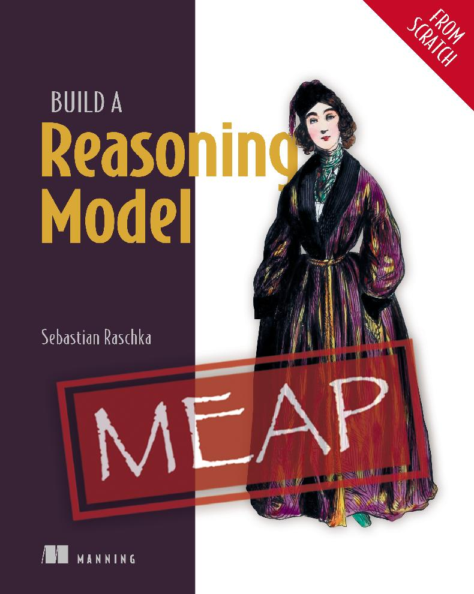

一本关于构建具备推理能力的大语言模型（LLM）的实践指南 —— 从预训练基础模型出发，逐步用代码为它添加各阶段推理能力。

推理是近年来提升大语言模型性能最令人振奋的重要进展之一，也是较容易被误解的概念——尤其是当你只在理论层面听说「推理」这个词时。
这本书采用实践导向：从一个预训练的基础 LLM 入手，逐行编写代码、分阶段为它添加推理能力，让你直观地看到推理系统究竟是如何工作的。全书为中英双语对照。
配套代码：github.com/rasbt/reasoning-from-scratch
使用浏览器打开即可在线阅读，无需任何安装。阅读体验在桌面端与移动端均适配。